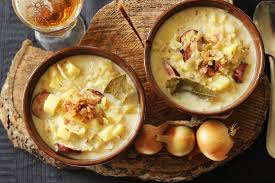

Polévka z kysaného zelí, klobásy a brambor, zahuštěná smetanou a moukou, dochucená majoránkou.
Pokud je zelí hodně kyselé, předem ho trochu propláchneme vodou. Zelí dáme do kastrůlku, zalijeme vodou, osolíme, přidáme kmín, nové koření a bobkový list a dáme vařit.
Brambory oloupeme, nakrájíme na kostičky a uvaříme zvlášť v menším množství lehce osolené vody.
Klobásu nakrájíme na kolečka a přidáme k zelí asi po 15 minutách vaření.
Ve smetaně rozmícháme hladkou mouku a trochu vody, tuto směs za stálého míchání přidáme do polévky a necháme zhruba 15 minut pozvolna provařit.
Ke konci přidáme uvařené brambory i s vodou, ve které se vařily. Dochutíme majoránkou, solí, pepřem a polévku odstavíme.
Podáváme s chlebem.